Copyright © 2024 Bill Yen.
Soil-Powered Computing
The Engineer's Guide to Practical Soil Microbial Fuel Cell Design
About:
Human-caused climate degradation and the explosion of electronic waste have pushed the computing community to explore fundamental alternatives to the current battery-powered, over-provisioned ubiquitous computing devices that need constant replacement and recharging. Soil Microbial Fuel Cells (SMFCs) offer promise as a renewable energy source that is biocompatible and viable in difficult environments where traditional batteries and solar panels fall short. However, SMFC development is in its infancy, and challenges like robustness to environmental factors and low power output stymie efforts to implement real-world applications in terrestrial environments. To overcome these issues, I led a 2-year design journey in collaboration with researchers from the Georgia Institute of Technology, UC San Diego, UC Santa Cruz, and Northwestern University to uncovers barriers to practical SMFC design for powering electronics, which we address through a mechanistic understanding of SMFC theory from the literature. We present nine months of deployment data gathered from four SMFC experiments exploring cell geometries, resulting in an improved SMFC that generates power across a wider soil moisture range. From these experiments, we extracted key lessons and a testing framework, assessed SMFC’s field performance, contextualized improvements with emerging and existing computing systems, and demonstrated the improved SMFC powering a wireless sensor for soil moisture and touch sensing. We contribute our data, methodology, and designs to establish the foundation for a sustainable, soil-powered future.
Soil Microbial Fuel Cells:
SMFCs are devices that harness specific types of microbes to generate electricity from soil. Exoelectrogens, or
microbes that transfer electrons outside of their cells, break down organic matter and release electrons, which
is captured by an anode. The cathode of the cell is exposed to oxygen, which gets reduced into water. The electrolyte,
or the layer between the anode and cathode, facilitates ion transfer and insulates the anode biofilm from oxygen, which hinders exoelectrogenic activity.
Because the electrodes only serve as surfaces for the microbes to live on, they do not get damaged or used up like traditional
batteries and fuel cells do. SMFCs can run forever as long as there is still organic carbon in the soil, and can be
made from almost any electrically conductive material. What's more, exoelectrogens can be found in nearly every environment,
meaning that there is no need to introduce foreign species into the ecosystem.

Iterative Design for Robustness:
While the theory of SMFCs is fairly simple, the challenge of implementing a robust working cell has impeded research into
soil-powered computing. Previous studies have tried to use low-performance, basic cells that were originally
designed for contaminant removal and had to maintain inundated environments to achieve high power output.
The works that have proposed different SMFCs rarely examine their relative strengths and weaknesses and never
explain their design rationales. This has made SMFC a difficult subject for non-experts to explore. To overcome this,
I devised a framework to break the SMFC down into modules that can be individually tested and improved in a principled manner, which greatly
shortens the design cycle of these devices.
 Using this iterative framework, I went through four different versions of SMFCs over the course of two years where I modified their geometry to optimize
their computationally usable energy output for lower moisture environments. I started from the v0 design, which was
based on the MudWatt,
and ended up with an improved v3 design that features a horizontal anode and a vertical cathode that has one side
permanently exposed to air. The v3 prototypes were able to operate in soil with 4% lower volumetric water content (VWC),
recovered faster from drought, and produced higher peak power throughout the 161-day experiment.
Using this iterative framework, I went through four different versions of SMFCs over the course of two years where I modified their geometry to optimize
their computationally usable energy output for lower moisture environments. I started from the v0 design, which was
based on the MudWatt,
and ended up with an improved v3 design that features a horizontal anode and a vertical cathode that has one side
permanently exposed to air. The v3 prototypes were able to operate in soil with 4% lower volumetric water content (VWC),
recovered faster from drought, and produced higher peak power throughout the 161-day experiment.

Contextualize Improvement In Simulation:
To understand the performance improvement of the v3 cells in terms of computing capabilities, I built a trace-based runtime simulation of the theoretical number of operations one could achieve with our v3 cell design compared to the control v0 cell. The simulation was constructed using real-world SMFC voltage traces collected throughout our design iterations (161 total days of data collection) alongside datasheet values for three computing modalities (Advanced, Minimal, Analog). When the energy in our simulated capacitor reaches a level sufficient to turn on the modalities, we discharge all of the energy and increment the number of operation by one. For the Analog modality, we ignore the capacitor and assume that the device turns on when the SMFC voltage exceeds a minimum threshold. More detail can be found in Section 5.1 of the paper and in the GitHub code. As a whole, we found that the v3 cell generated on average 68 times more power than needed for the Analog system to operate, and increased its theoretical runtime by 120% compared to the baseline v0 cell. In addition, systems powered by v3 cells are able to achieve a roughly 40% increase in total operation count across the board (43.2% for Advanced and 41.7% for Minimal), further contextualizing our new SMFC design’s improved robustness to VWC.
Validate Lab Results With Outdoor Deployment:
Although the v3 cells from our lab experiments have been shown to produce upwards of 50 μW after being dried out, they were evaluated under controlled settings where the soil was kept flooded for weeks at a time to revive them back to their maximum output after each drying cycle, which is unrealistic for most applications. To examine our improved v3 SMFC under field conditions, we deploy a modified v3 cell (v3.1) outside in an irrigated yard to gauge its performance and understand the impacts of real-world stimuli on SMFC power output. The scaffold, flange, cap, and anode G-clips were all 3D printed from plant-based PLA plastic to reduce the number of store-bought parts. All of the membrane and electrode materials, geometries, and configurations were kept the same as the v3 design, ensuring minimal impact on cell behavior.
Soil-Powered Sensor Using RF Backscatter:
To demonstrate the potential of soil-powered backscatter sensors, I integrated our v3.1 cell with a MARS tag in the lab to perform wireless touch and soil moisture sensing using only energy from a SMFC. MARS is basically a Colpitts oscillator connected to an RF switch that modulates the impedance of an antenna. As such, I built our own MARS tag using KiCAD and modified the design to accomodate a "sensing capacitor" that takes the form of either a bare wire or a coplanar capacitor for touch and moisture sensing respectively. MARS leverages a passive communication technique known as RF backscatter, which means it modulates the reflected RF signal of an active transmitter (Tx) to a receiver (Rx) instead of generating its own signal. When the capacitance of the sensing capacitor changes, the Colpitts oscillator's frequency also changes, which affects the frequency at which the antenna's impedance is being modulated, thus mixing our reading into the backscattered signal in the form of a frequency shift. I used HackRF Software-Defined Radios for Tx and Rx, and GNU Radio + MATLAB for data processing.
Touch Sensing:
One basic capability of the soil-powered backscatter sensor is touch sensing. In the demo, a user grabbed the sensing wire with their hand twice, which correlates with the two dips in backscatter frequency. Since the fringing field of a cylindrical capacitor (the wire) is very small, only items very close to or directly touching the wire will change its capacitance, making it robust to noise. This configuration provides a binary measurement for whether something is in contact with the wireless sensor, which can be useful for applications like wildlife monitoring.
Moisture Sensing:
Another practical application we enable is soil moisture sensing. By tuning the geometry of the coplanar capacitor that serves as our moisture sensor, one can adjust the resolution of the VWC reading and even set a threshold VWC at which the backscatter signal cuts off, alerting the Rx device of overwatering or extreme rain events. This potentially makes the soil-powered MARS sensor a powerful choice for VWC sensing and flood detection in wetland and green infrastructure monitoring applications where batteries and solar panels face issues from corrosion and chemicals leaching out.
My Roles:
Acknowledgements:
The study, “Soil-Powered Computing: The Engineer’s Guide to Practical Soil Microbial Fuel Cell Design,” was supported by the National Science Foundation (award number CNS-
2038853), the Agricultural and Food Research Initiative (award number 2023-67021-40628) from the USDA National Institute of Food and Agriculture, the Alfred P. Sloan Foundation, VMware Research, and 3M.